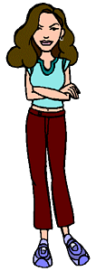

Full Name: Sandi Griffin
Current Age: 17
Current Vocation: Senior at Lawndale High
Season One Age: 15
Season One Vocation: Freshman at Lawndale High
Parents: Tom and Linda Griffin
Siblings: Sam and Chris
First Appearance: Esteemsters
Sandi is the President of the Fashion Club, and takes her leadership role very seriously (well, as seriously as she is able). Her deep voice is exceeded only by her very deep jealousy of Quinn, whom she feels is a threat to her standing both in the Fashion Club and on the popularity scene. Her mother, Linda, is a prominent businesswoman in Lawndale, and her rivalry with Helen is a mirror of the one between Sandi and Quinn. In fact, there seems to be growing evidence that Sandi is the way she is largely due to Linda's influence.
Despite her predatory ways, there's growing evidence that her hold on the Fashion Club is starting to slip: Quinn is showing signs of greater independence (perhaps because now that she's getting smarter, she knows that she doesn't have to rely on the Fashion Club as much), and Stacy is growing more of a backbone, allowing her to stand up to Sandi's bullying tactics more often. And even Sandi herself may be changing somewhat: her recent bout with weight gain showed her how much of a friend she really has in Quinn, and that she could have more real friends if she treated people as potential allies, not as adversaries. Whether or not she'll seize the opportunity in front of her, however, remains to be seen.
Status at end of series:
Advanced to the senior class at Lawndale High. Took a permanent sabbatical from the Fashion Club when first Quinn, then Stacy and Tiffany did likewise, which essentially caused the Fashion Club to dissolve (though the girls continue to be friends and hang out with each other).
Daria on Sandi:
Her voice is deep. Her thoughts are not.
|
|
Voice:
Sandi's voice is performed by Janie Mertz (aka "Lisa Collins"), who also does the voices of Brittany, Linda, the reporter from Sick, Sad World, and Andrea (starting with season 4).
View the alter-egos for this character!
|
- Sandi's last name was officially revealed in "The Lost Girls" (#305). Unofficially, it was first revealed in The Daria Database.
- Linda was first seen in "Gifted" (#208). Tom, Sam, and Chris was first seen in "Fair Enough" (#210) (it would be Tom's only appearance in the series).
- Sandi's brothers, Sam and Chris, are named for Daria writers Sam Johnson and Chris Marcil, who went on to become the executive producers of the NBC sitcom Frasier.
- During season one, Sandi wore a jumpsuit-type outfit. During seasons two and three, she wore a light blue shirt with a vertical red stripe and maroon slacks. Starting with season four, she wore the outfit shown above.
|